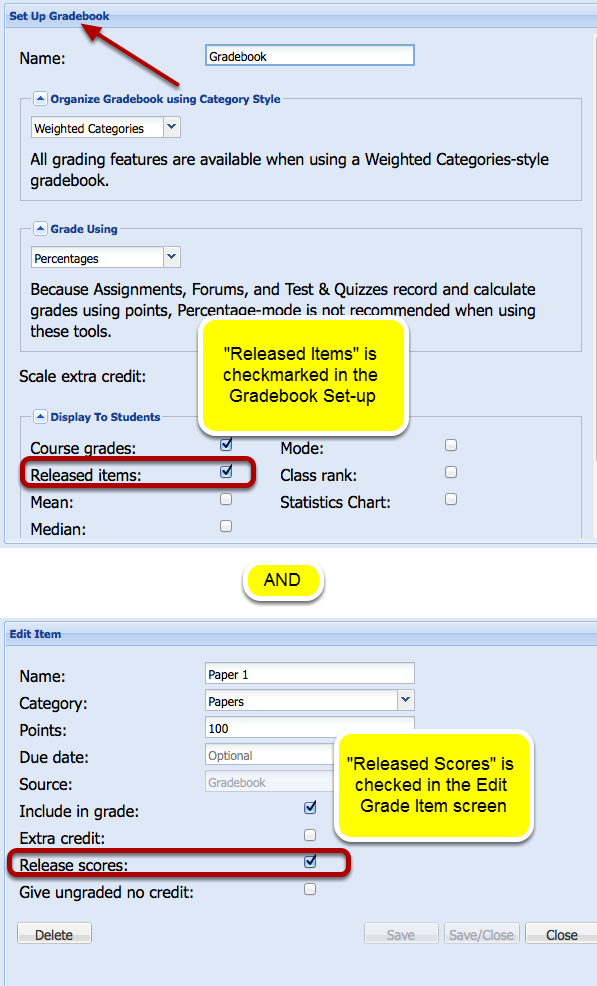

Why are students not seeing released grades in Gradebook2?
In Gradebook2, students can view scores for grade items if you have selected the "Release scores" setting for each item and you have selected the "Released items" option in the "Display to Students" list of settings for your gradebook.
Example: Both of these settings must be made before students can see their grades.
